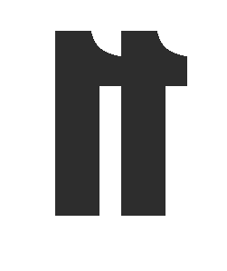

11
Cara
ban
chel
no es
una
ten
den
cia.
56 espacios. Galerías, naves,
bares históricos, librerías,
salas de música y mucho más.
Distrito 11 · Carabanchel · Madrid · 2026
nave11.app

Madrid · 2026
170
Manifiesto
Carabanchel
tiene 170+
espacios
culturales.
Hasta ahora no había un mapa.
El ecosistema más denso y auténtico de Madrid está completamente invisibilizado. El Ayuntamiento tiene una web institucional. Círculo Carabanchel lista solo galerías. El resto —naves, bares históricos, librerías, salas de música, comercios— no aparece en ningún sitio usable.
Sin agenda institucional. Sin patrocinadores. Sin publicidad. Un proyecto vecinal e independiente, hecho desde el barrio para el barrio.
Nave11 mapea TODO el ecosistema. No solo las galerías con nombre. Los bares de toda la vida. Las naves donde trabajan los artistas.
nave11.app · El mapa que faltaba
El
Cara
ban
chel
real.
✕ NO es
✕Guía turística oficial
✕Marketplace de reservas
✕Web institucional
✕Solo arte contemporáneo
✕Un proyecto que descubre el barrio
✕Medio con agenda editorial
✓ SÍ es
✓Proyecto vecinal independiente
✓El mapa más completo del Distrito 11
✓Galerías y bares de 1967, juntos
✓Para descubrir, no para consumir
✓Hecho desde el barrio
✓Sin publicidad · Sin patrocinadores
✓El mapa que ya era necesario
Directo
Sin rodeos ni turismo
Auténtico
La voz del barrio
Completo
Los 56 espacios
CAT
El directorio
56 espacios.
15 categorías.
——— Cultura
Galerías
Arte contemporáneo. Las primeras al sur.
Naves
Donde ocurre lo que no sale en prensa.
Estudios
Los artistas que hacen posible el resto.
Salas
Rock, teatro, ensayo. Sin prensa.
Música/danza
Dos conservatorios. Europa entera.
Arte digital
La tecnología tiene su nave aquí.
Centros cult.
Los 5 espacios municipales.
——— Gastronomía
Vinos
Naturales, de grifo, con historia.
Cerveza
Fabricada aquí mismo.
Café
Especialidad. Llegaron sin ruido.
Restaurantes
Creativa, vegana y de toda la vida.
Tapas
Neotabernas y las de siempre.
Castizo
Los que estaban antes. Seguirán.
——— Barrio
Librerías
Independientes. Con criterio.
Comercios
Los que hacen el barrio.
Una selección · Directorio completo en nave11.app
Ocho
sitios
impres
cinbr>
dibles.
01
Gruta 77
C. Cuclillo, 6 · La sala underground
Sala
02
VETA by Fer Francés
C. Antoñita Jiménez, 31-43
Galería
03
Casa de los Minutejos
C. Antonio de Leyva, 19 · Desde 1967
Castizo
04
Cervezas Patanel
Av. Pedro Diez, 21 · Fabricada aquí
Cerveza
05
Librería Derivas
C. Jacinto Verdaguer, 17
Librería
06
Nave Oporto
Av. Pedro Diez, 25
Nave
07
Casa Enriqueta
C. Gral. Ricardos, 19 · Casquería pura
Castizo
08
Matilda
C. Matilde Hernández, 32
Sala
HAZTE UN PLAN
Funcionalidad · nave11.app/planes
Hazte
un plan.
Dinos qué te apetece.
Nosotros ponemos el mapa.
1
¿Cuánto tiempo tienes?
Un rato (1h) · Una tarde (3h) · Día completo (6h+)
2
¿Qué quieres ver?
Galerías · Naves y espacios alternativos · Arte urbano · De todo
3
¿Con quién vas?
Solo/a · En pareja · Con amigos · Con niños
4
¿Qué te apetece tomar?
Vino natural · Café y brunch · Cerveza artesana · Cualquier cosa
5
¿Algo más? (opcional)
Librería · Pan artesanal · Nada en especial
nave11.app · Carabanchel · Distrito 11
Cómo
usar
nave11.app
1
Entra en nave11.app desde el móvil o el ordenador. Verás el directorio completo: 56 espacios del Distrito 11.
2
Filtra por galerías, bares históricos, librerías, cerveza… O usa el buscador si sabes lo que buscas.
3
Activa el mapa para ver todos los espacios geolocalizados y planificar tu ruta a pie por el barrio.
4
¿Quieres que alguien lo haga? El Generador de Planes te propone una ruta personalizada en segundos.
5
¿Tu espacio no aparece? Escríbenos: hola@nave11.app
QR aquí
nave11.app
Escanea o escribe la dirección
en tu navegador. Móvil y ordenador.
EL
MAPA
El mapa
que
faltaba.
Proyecto independiente
Sin publicidad · 2026
hola@nave11.app
digitaldementia.es
nave11.app